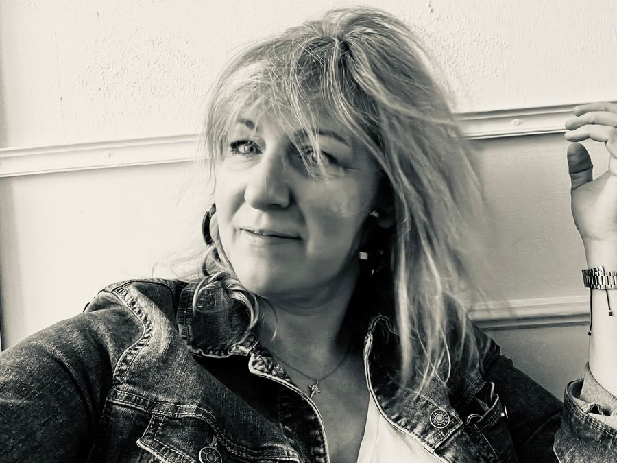
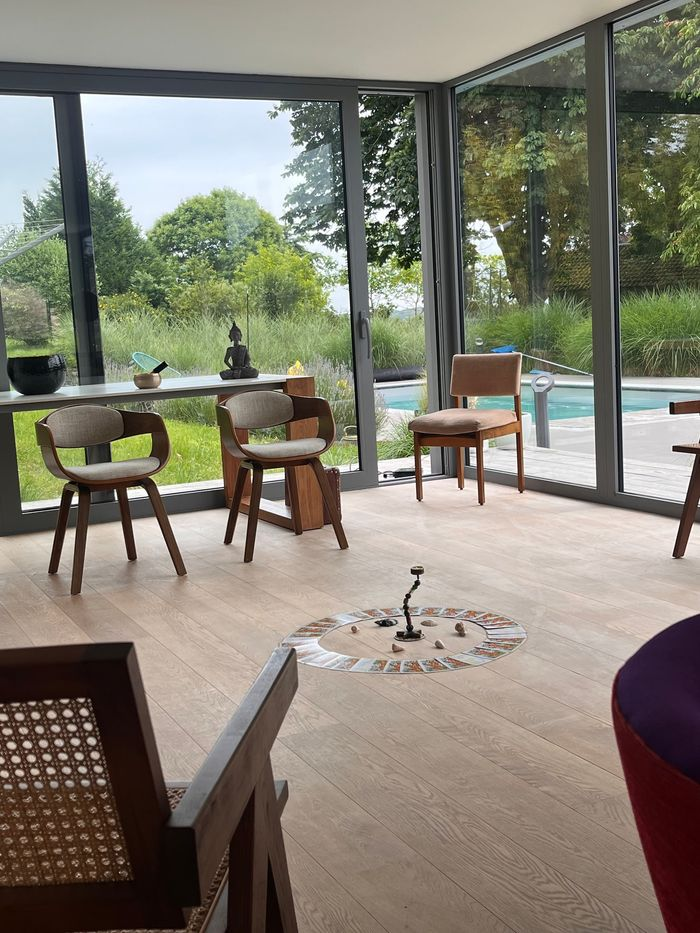
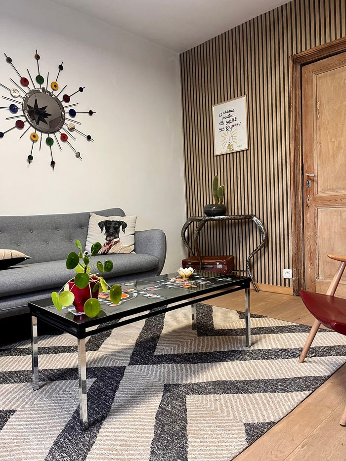
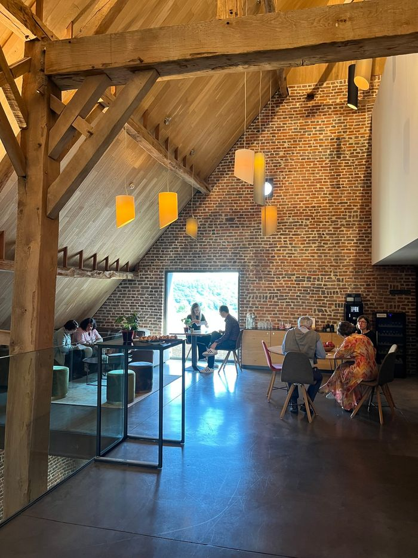
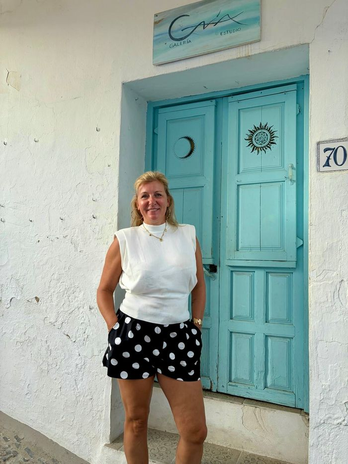
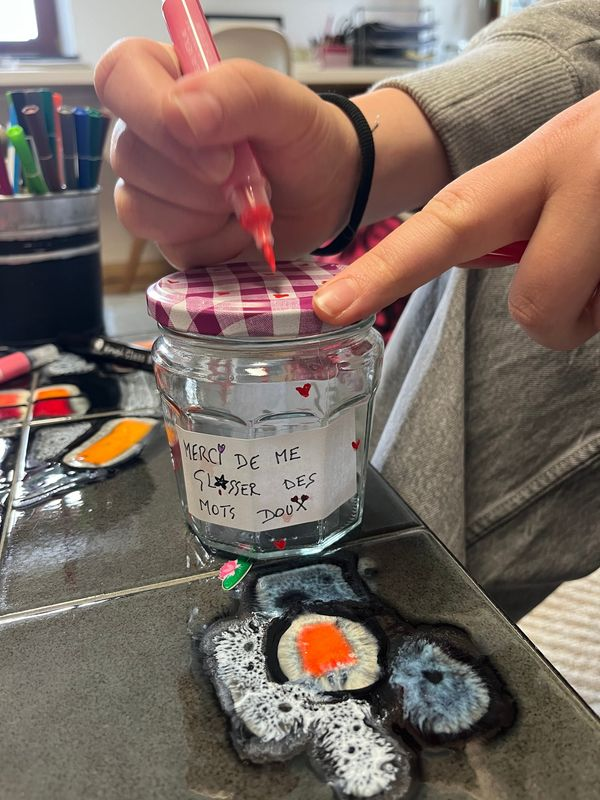
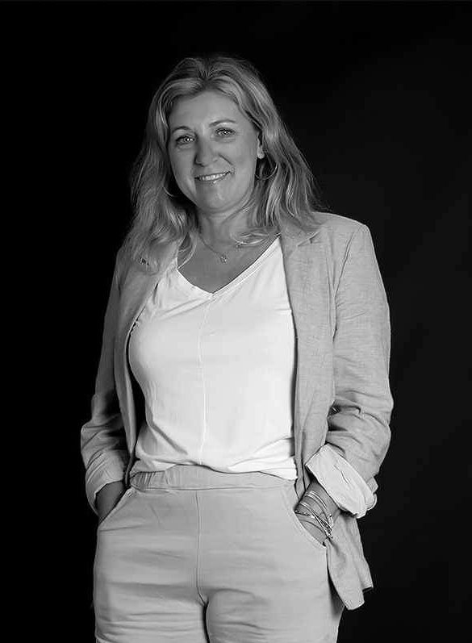

Coaching Guida · trois directions pour la maquette
Toutes partent du bleu du logo, des vrais portraits de Mariève et de ses vrais lieux (salle des constellations, cabinet, grange des formations). Mêmes pages, même contenu : seul le style change.
Direction ARecommandée
Le cercle
Claire, lumineuse, rassurante. Le cercle est partout chez Guida : le rond bleu du logo, les chaises en cercle et les figurines posées au sol de la salle des constellations. Il revient avec mesure : le portrait de Mariève dans le cercle, le voile de transition qui s'ouvre en cercle, un rond qui se pose sur la situation que vous choisissez.
Coaching professionnel, de vie et scolaire, constellations familiales. Mariève Gérard, à Héron, depuis 1996.
Prendre rendez-vousUn premier échange de quelques minutes

↗
Palette
Fond #F5F7F9
Second fond #E3EEF8
Accent #2366B0 · 5,8:1
Bandes #163A63
Rond du logo #8FBCEB
Typographie
Young Serif pour les titres, chaleureuse, ronde · Albert Sans pour le texte, nette et lisible.
Accueil (9 écrans)
Ouverture : grand titre, portrait dans le cercle du logo, la flèche du logo qui « guide »
« De quoi avez-vous besoin aujourd'hui ? » : les 5 situations de son site, un rond se pose sur la vôtre et ouvre le bon accompagnement
Les accompagnements en grandes cartes photo · Qui suis-je et parcours (1996, Sénégal, IFAPME) · son approche, mot à mot · la salle des constellations qui s'ouvre en plein écran · écoles et entreprises · appel final
Animations
Le portrait qui entre dans le cercle à l'ouverture, ronds qui se dessinent autour des mots clés, cartes qui arrivent l'une après l'autre, frise du parcours qui se trace, photos en parallaxe, voile en iris. Niveau visé : Fit-Tri et Nolanis (clair, net, un seul système).
Vraies photos mises en avant




Direction B
Le carnet de méthode
Plus ludique et énergique, tournée vers l'élève et la méthode de travail (son métier de logopède, l'IFAPME). Papier quadrillé, bleu stylo du logo, surligneur qui passe sur les mots clés, petites notes manuscrites dans la marge, onglets de classeur pour les trois coachings.
depuis 1996 !
Avancer avec une méthode qui vous ressemble.
Coaching scolaire, professionnel et de vie, constellations familiales. Mariève Gérard, coach et logopède, à Héron.
Prendre rendez-vous

« des mots doux »
ScolaireProfessionnelDe vie
Palette
Papier #FBFAF6
Quadrillage #F1F4F9
Stylo bleu #2F5FB3 · 6,2:1
Surligneur #FFD66B
Encre #1C2A4A
Typographie
Gabarito pour les titres, ronde et franche · Public Sans pour le texte · Caveat pour les notes.
Accueil (9 écrans)
Ouverture : titre surligné, photo épinglée (le bocal « mots doux »), onglets des trois coachings
Les 5 situations en post-it à cocher · les accompagnements en onglets de classeur · Qui suis-je en fiche annotée · la méthode en 4 étapes qui se coche · formations en fiches · appel final
Animations
Surligneur qui passe au défilement, notes qui s'écrivent dans la marge, post-it qui se posent, onglets qui s'ouvrent, coches qui se tracent. Niveau visé : Cool Canyoning (plat, joyeux, utile).Risque : un ton un peu jeune pour les entreprises.
Vraies photos mises en avant

Direction C
Constellation
Plus intime et introspective. L'accueil s'ouvre de nuit : des points, comme les membres d'une famille, cherchent leur place et se relient en cercle autour du portrait de Mariève ; en descendant, la nuit s'éclaircit jusqu'à l'aube, et tout le reste du site est clair. Portraits en noir et blanc, or doux.
Trouver sa place, retrouver son élan.
Coaching professionnel, de vie et scolaire, constellations familiales et systémiques. Mariève Gérard, à Héron.
Prendre rendez-vous
Palette
Aube (fond) #F7F0EC
Nuit #121D33
Or doux #D9A54B · 7,6:1 sur nuit
Bleu Guida #2366B0
Ciel #8FBCEB
Typographie
Spectral italique pour les titres, fine et littéraire · Karla pour le texte.
Accueil (9 écrans)
Ouverture de nuit : les points se placent en cercle autour du portrait
La nuit s'éclaircit au défilement · les situations · les accompagnements · la salle des constellations · Qui suis-je · formations · appel final de nuit
Animations
Constellation en canvas qui réagit au pointeur, fond qui passe de la nuit à l'aube, titres en italique qui arrivent ligne à ligne, portraits qui se révèlent. Niveau visé : Les Plus Hautes Eaux (atmosphère) avec un site majoritairement clair.Risque : plus « spirituel », moins concret pour le scolaire et l'entreprise.